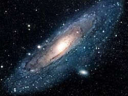

Guia das galáxias

Galáxia de Andromeda
Descrição
A galáxia de Andrêda (Messier 31, NGC 224) é uma galáxia espiral localizada a cerca de 2,54 milhões de anos-luz de distância da Terra, na direção da constelação de Andrômeda.
Dados Interessantes
- Além da Via Láctea, é a galáxia mais estudada
- Suas duas galáxias satélite, Messier 32 e Missier 110, são visíveis em binóculos
- Sua distância em relação á Terra ainda não foi bem definida
Outras galáxias:
Olho Negro,
Nuvem de Magalhães